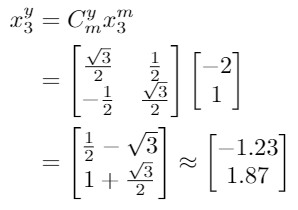
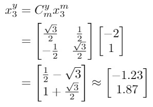

3.2 Handling different coordinate frame axes
When transforming from one coordinate frame to another, we need to understand how the basis vectors are different between the coordinate frames. The mapping of the basis vectors from one reference frame into another is generally referred
to as a rotation. In two dimensions (2-d), this is represented by a single rotation angle as shown in Figure 3. To convert a vector from one coordinate frame's set of vectors into another, we use a Given's rotation matrix,
defined as:

This matrix enables the conversion of a vector between two coordinate frames with the same origin. Consider Figure 3 that has three points ({x1,x2,x3}), all

expressed in the m coordinate system. Because θ = 30◦, then rotation matrix going from m to y (denoted Cmy) will be:

For each point in Figure 3, the location of that point in your coordinate system can be derived by multiplying the rotation matrix and the vector together, yielding:
 

Let us consider what some of these numbers mean as observing what happens numerically can give some insight into what a proper rotation does.
3.2.1 Rotation Matrix Properties
Note that the Given's rotation matrix has some special properties that we should discuss. Mathematically, the matrix is a special orthonormal matrix, meaning it has the following properties:
.
where CT
Cym = (Cmy)T
represents the transpose of the matrix. This property means that if you have the matrix to go from one coordinate frame to the other, it is relatively straight-forward to go backwards as well.
← Previous
Next →